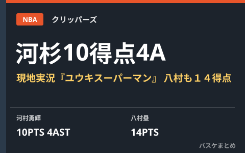

河村勇輝が2戦目で10得点4アシストの躍動 現地実況「ユウキスーパーマン」、八村塁も14得点

NBAクリッパーズでエグジビット10契約中の河村勇輝が10月10日（日本時間11日）、プレシーズン2戦目のラプターズ戦に途中出場し、持ち味のノールックパスや3ポイントシュートを決めて10得点4アシストの活躍を見せました。チームは106-114で敗れましたが、現地実況は「ユウキスーパーマン」と絶叫。同じ試合で先発した八村塁も14得点を記録しています。2WAY契約の獲得を目指す河村にとって、大きなアピールの機会となりました。
河村勇輝、途中出場で10得点4アシスト 現地実況も絶賛
河村はラプターズ戦に第4クォーターから途中出場し、相手を引き付けるノールックパスや3ポイントシュートを決めるなど存在感を発揮しました。デイリースポーツによると、出場時間は14分15秒で10得点4アシスト。現地の実況が「ユウキスーパーマン！」と興奮気味に実況したとスポニチアネックスが伝えています。NBA公式もこの日のプレーをハイライト動画で紹介し、ファンから好意的な反応が相次ぎました。河村は現在エグジビット10契約でキャンプに参加しており、開幕ロースター入りは保証されていません。目標とする2WAY契約の獲得に向け、残り少ないプレシーズンでのアピールが続きます。
| 選手 | 出場時間 | 成績 |
|---|---|---|
| 河村勇輝 | 14分15秒 | 10得点4アシスト |
| 八村塁 | 非公表 | 14得点 |
八村塁も14得点、プレシーズン2試合連続の活躍
クリッパーズに新加入した八村塁は、この日も先発の一人として試合に入り14得点を記録しました。10月4日（日本時間5日）のウォリアーズ戦では前半だけで21得点を挙げて勝利に貢献しており、2試合続けて得点力を示しています。クリッパーズのレギュラーシーズン開幕戦は10月21日（日本時間22日）のキングス戦に決まっており、八村にとって新天地での初陣が近づいています。
Q. 「エグジビット10契約」とは？
A. トレーニングキャンプとプレシーズンの試合に参加できる契約で、開幕ロースター入りは保証されていません。好成績を挙げればNBA本契約や2WAY契約につながる可能性があります。
出典：デイリースポーツ・共同通信配信「八村１４得点、河村は１０得点」／スポニチアネックス「クリッパーズ河村勇輝が猛アピール！途中出場で10得点4Aの躍動 現地実況興奮『ユウキスーパーマン！』」／スポーティングニュース日本版「河村勇輝、2戦目の躍動にNBA公式も注目」ほか
https://www.daily.co.jp/general/2026/10/11/0020916474.shtml
https://news.yahoo.co.jp/articles/fedd3650c8951bf15262485216ecaf33fc3c34df
https://news.yahoo.co.jp/articles/2a6499284803ef53440aff880c5cf33483a52d9a